TerraLuna App
Für Histaminintoleranz, Darmprobleme, Zöliakie, Allergien und Zyklusbeschwerden. Entwickelt von einer Betroffenen.
Features
Jede Funktion wurde entwickelt, weil ich sie selbst gebraucht hätte. Für den Alltag mit Unverträglichkeiten, Allergien und hormonellen Beschwerden.
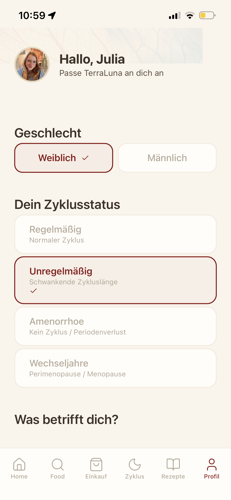
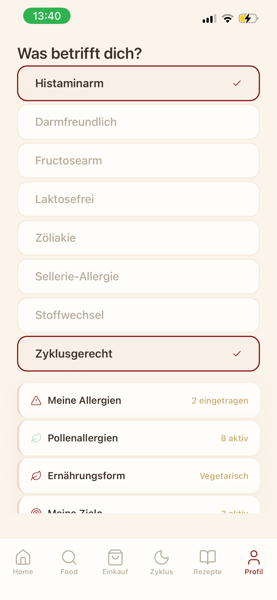
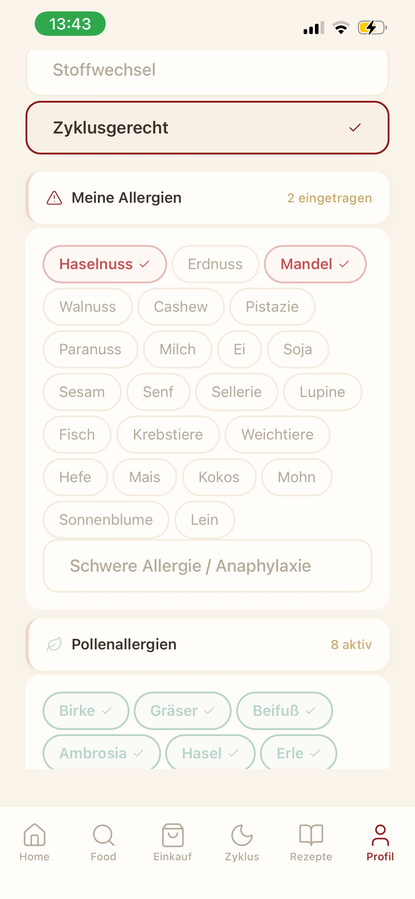
01 — Profil
Dein Profil bildet die Grundlage für alles. Gib an, welche Unverträglichkeiten, Allergien und Beschwerden du hast. Die App passt sich dir an.
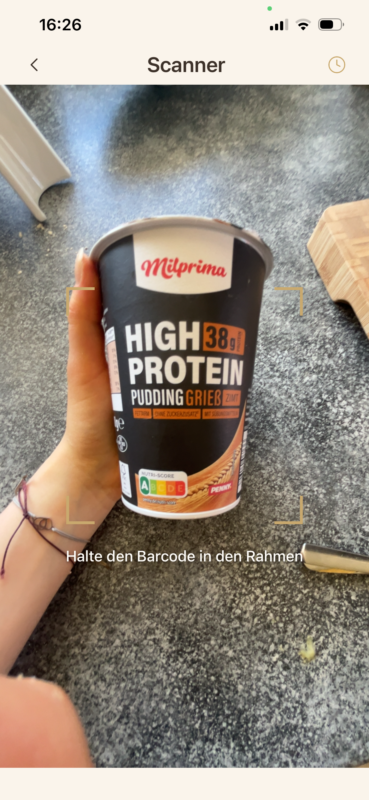
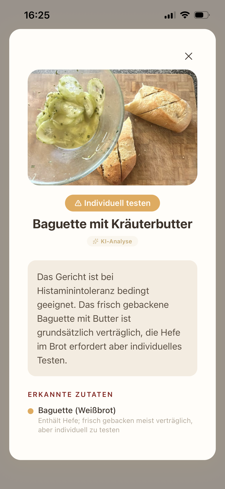
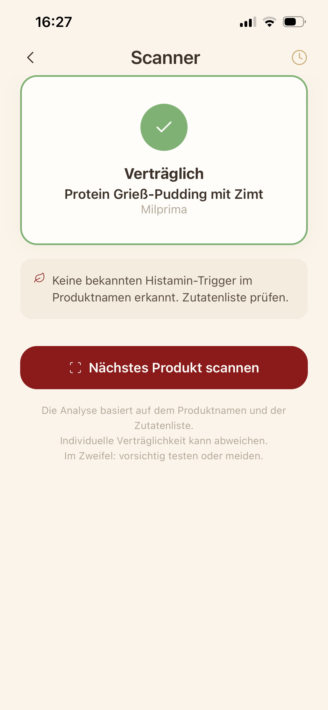
02 — Scanner
Scanne Produkte im Supermarkt und erfahre sofort, ob sie für dich geeignet sind. Mit Ampel-System und detaillierter Analyse.
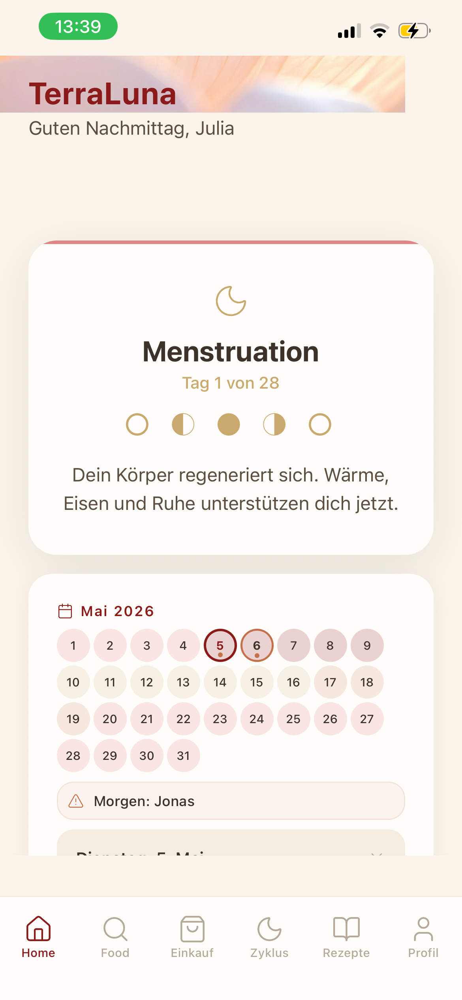
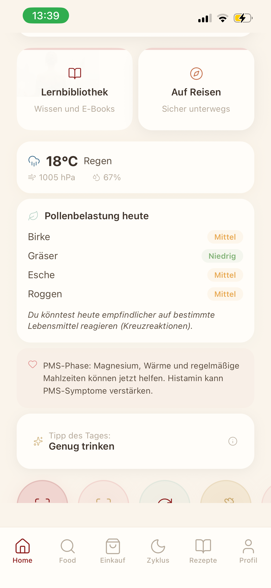
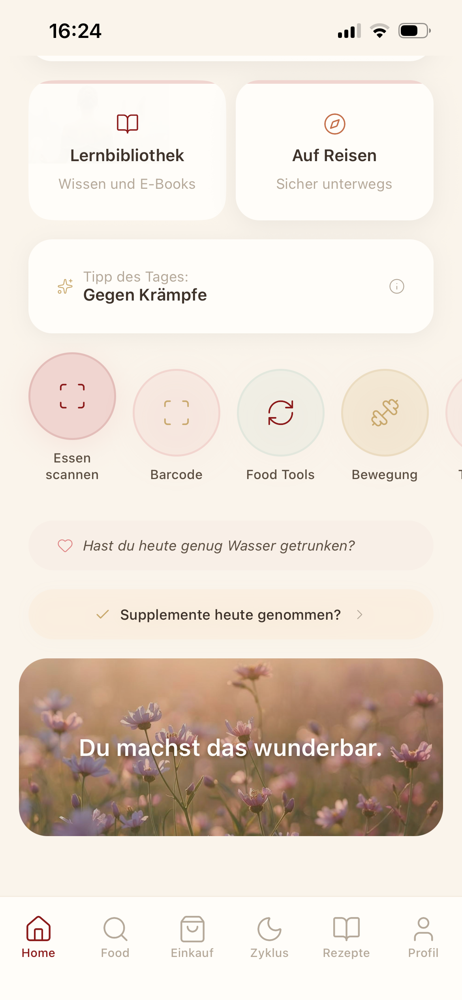
03 — Home und Zyklus
Der Homescreen zeigt dir, was heute wichtig ist. Abgestimmt auf deinen Zyklus, deine Beschwerden und deine aktuellen Bedürfnisse.
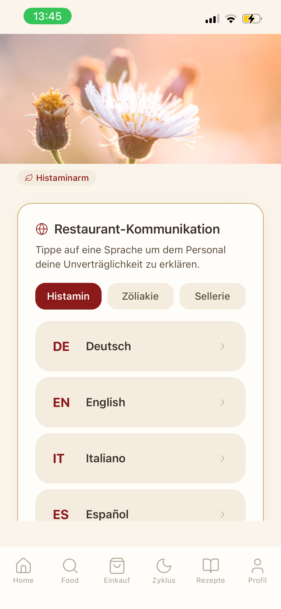
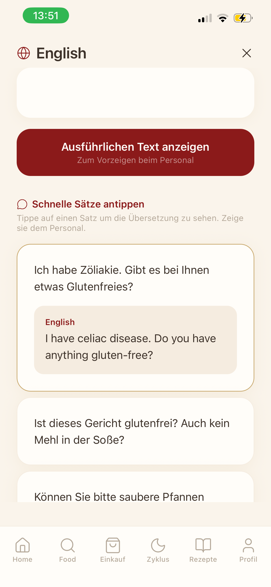
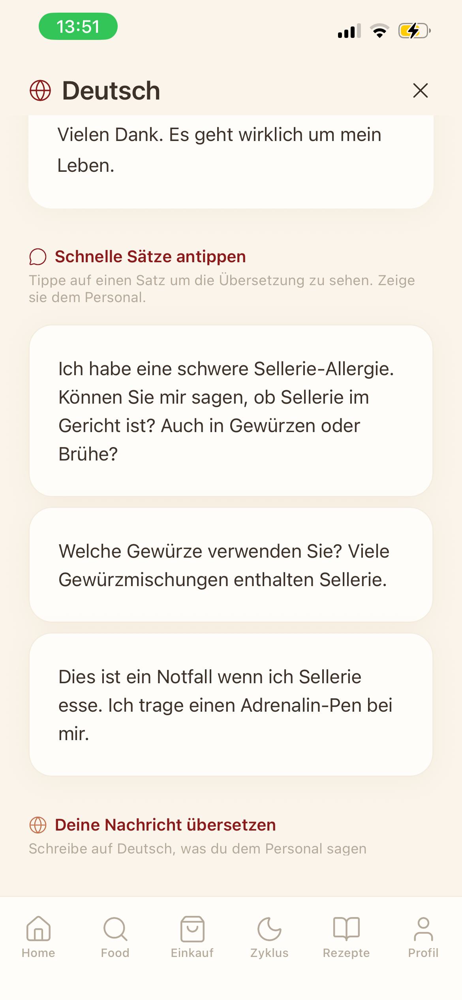
04 — Reisen
Reisen mit Unverträglichkeiten muss kein Stress sein. TerraLuna hilft dir, deine Bedürfnisse in der Landessprache zu kommunizieren.
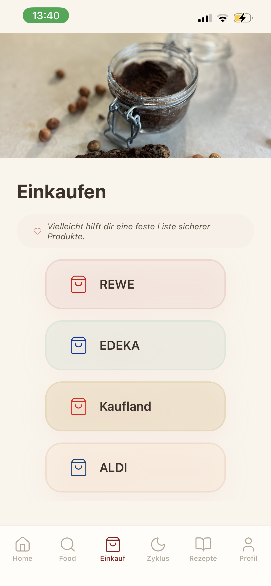
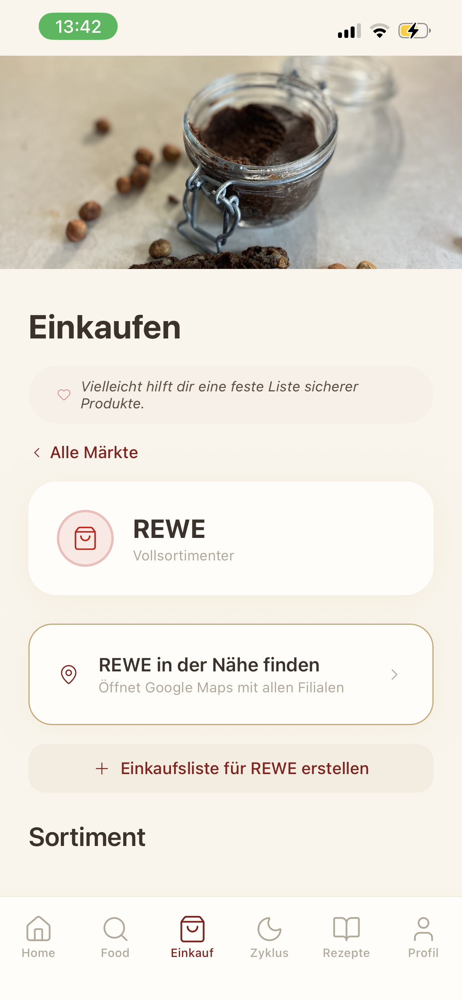
05 — Einkaufen
Erstelle Einkaufslisten, die auf deine Verträglichkeiten abgestimmt sind. Mit Supermarkt-Sortimenten, die du filtern kannst.
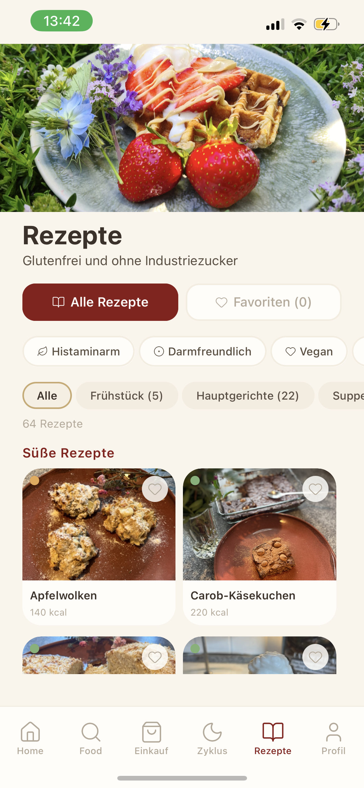
06 — Rezepte
Alle Rezepte sind glutenfrei und ohne Industriezucker. Jedes Rezept zeigt dir die Bewertung für Histamin, Darm und Zyklusphase.
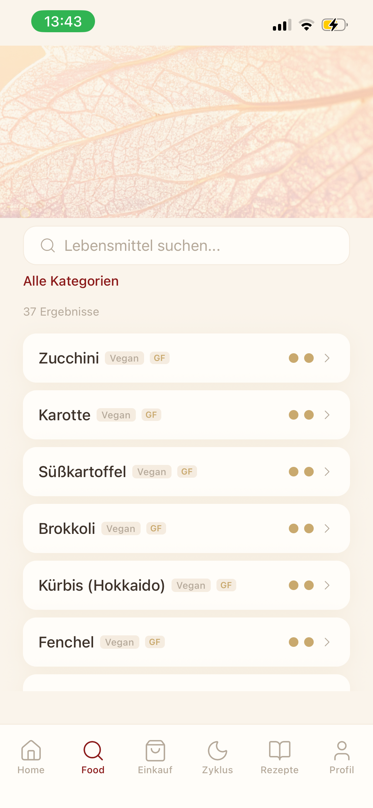
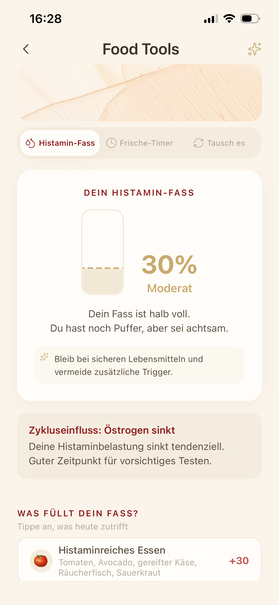
07 — Lebensmittel und Food Tools
Die Lebensmittel-Datenbank zeigt dir auf einen Blick, was für dich geeignet ist. Mit Bewertungen für Histamin, Darm und alle vier Zyklusphasen.
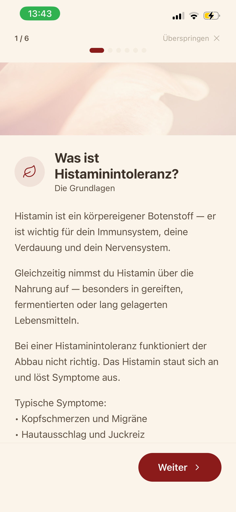
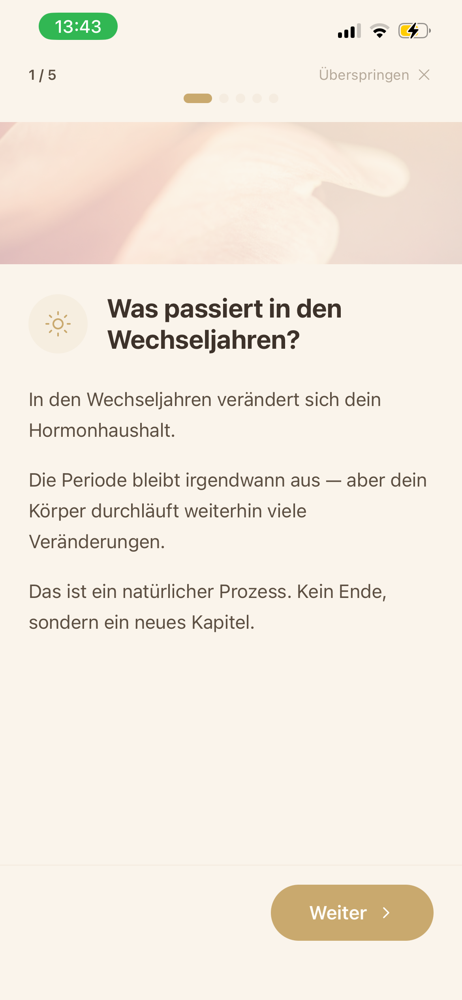
08 — Onboarding und Lernen
Fundierte Lerninhalte zu Histamin, Darmgesundheit, Zyklus und Ernährung. Verständlich erklärt, medizinisch fundiert.
Und noch mehr
TerraLuna denkt weiter als nur Ernährung. Dein Wohlbefinden hängt von vielen Faktoren ab.
Verstehe, wie Stress deine Verträglichkeit beeinflusst. Mit Atemübungen und Nervensystem-Regulierung.
Pollenflug und Wetterdaten, die dir zeigen, warum du heute empfindlicher reagierst als sonst.
Dokumentiere dein Befinden und entdecke Muster. Die App erkennt Zusammenhänge, die dir im Alltag entgehen.
Schnelle Hilfe bei akuten Beschwerden. Klare Handlungsempfehlungen, wenn es dir gerade nicht gut geht.
Sanfte Workouts, abgestimmt auf deine Zyklusphase und dein aktuelles Energielevel.
Histaminintoleranz und Darmprobleme betreffen nicht nur Frauen. TerraLuna funktioniert für alle.
Preise
Starte kostenlos und erweitere, wenn du bereit bist. Kein Abo-Zwang, keine versteckten Kosten.
Für immer kostenlos
oder 39,99 Euro / Jahr
oder 59,99 Euro / Jahr
Medizinischer Hinweis: TerraLuna ist eine Orientierungshilfe und ersetzt keine ärztliche Diagnose oder Therapie.
Trag dich ein und erfahre als Erste, wenn TerraLuna verfügbar ist.